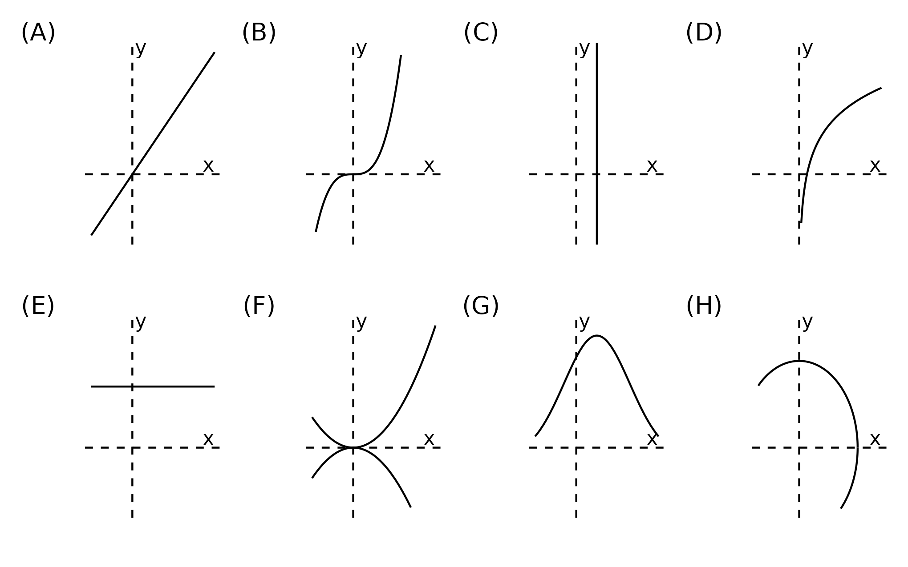
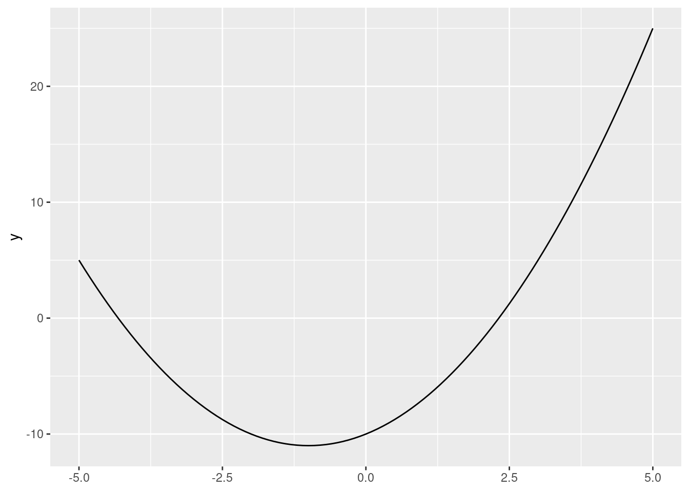
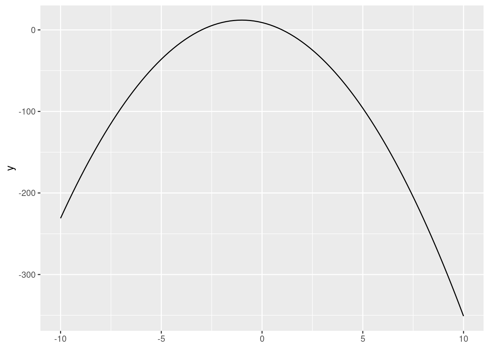
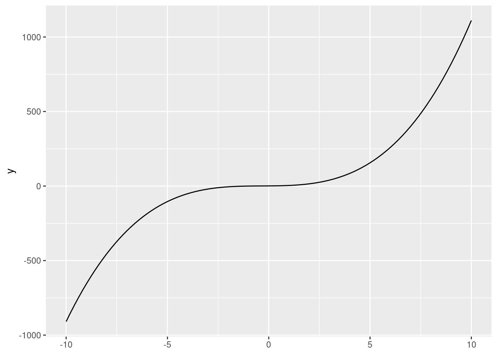
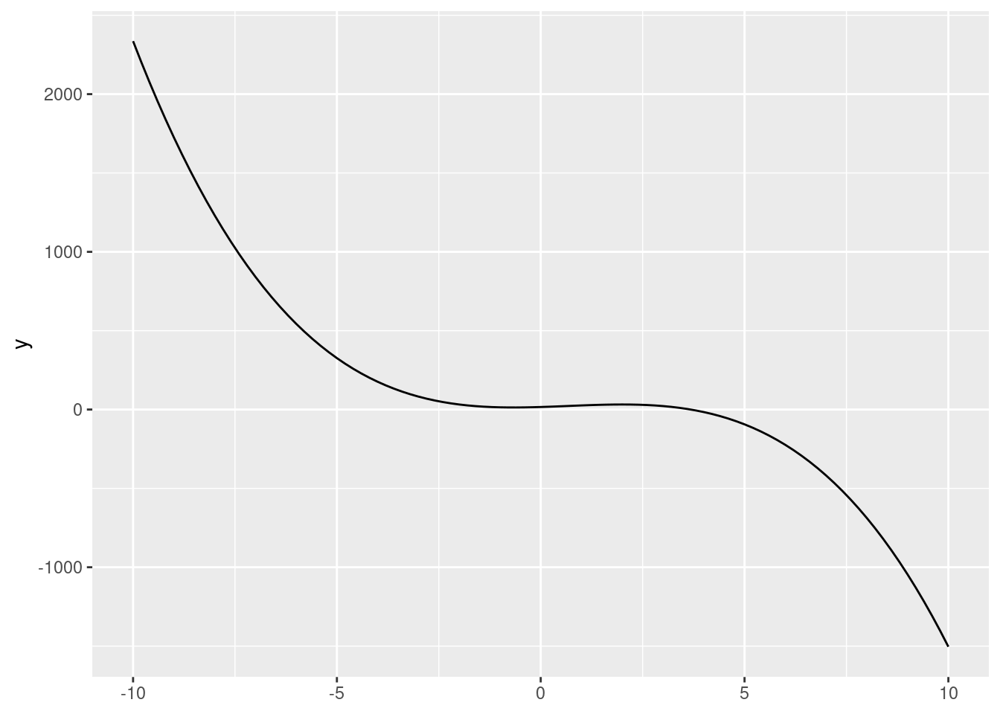

pi * 2[1] 6.283185Exercise
Create your own code block below and run a math operation.
pi * 2[1] 6.283185Exercise
Examine the help file of the
log()function. How can we compute the the base-10 logarithm of my_object? Your code:
# setup: these steps were executed before the exercise
my_object <- 10log() function.?logmy_object.log10(my_object)[1] 1Exercise
Obtain the maximum value of water content per 100g in the data. Your code:
# setup: these steps were executed before the exercise
my_character_vector <- c("Apple", "Orange", "Watermelon", "Banana")
my_data_frame <- data.frame(fruit = my_character_vector,
calories_per_100g = c(52, 47, 30, 89),
water_per_100g = c(85.6, 86.8, 91.4, 74.9))
my_data_framemax(my_data_frame$water_per_100g)[1] 91.4Exercise
Select the variables
last_name,party,num_votes, andagreefrom the data frame. Your code:
# setup: these steps were executed before the exerciseExercise
Add a new column to the data frame, called
diff_agree, which subtractsagreeandagree_pred. How would you createabs_diff_agree, defined as the absolute value ofdiff_agree? Your code:Filter the data frame to only get senators for which we have information on fewer than (or equal to) five votes. Your code:
Filter the data frame to only get Democrats who agreed with Trump in at least 30% of votes. Your code:
# setup: these steps were executed before the exercisediff_agree, which subtracts agree and agree_pred. How would you create abs_diff_agree, defined as the absolute value of diff_agree? Your code:Exercise
Arrange the data by
diff_pred, the difference between agreement and predicted agreement with Trump. (You should have code on how to create this variable from the last exercise). Your code:
# setup: these steps were executed before the exerciseExercise
Obtain the maximum absolute difference in agreement with Trump (the
abs_diff_agreevariable from before) for each party.
# setup: these steps were executed before the exerciseExercise
Draw a column plot with the agreement with Trump of Bernie Sanders and Ted Cruz. What happens if you use
last_nameas theyaesthetic mapping andagreein thexaesthetic mapping? Your code:
# setup: these steps were executed before the exerciseExercise
Get the product of the first three elements of vector \(d\). Write the notation by hand and use R to obtain the number.
\[\overrightarrow d = \begin{bmatrix} 12 & 7 & -2 & 3 & 1 \end{bmatrix}\]
# setup: these steps were executed before the exercise
vector_d <- c(12, 7, -2, 3, -1)\[\prod_{i=1}^3 d_i = 12 \cdot 7 \cdot (-2) = -168\]
prod(vector_d[1:3])[1] -168Exercise
- Calculate \(A + B\) \[A= \begin{bmatrix} 1 & 0 \\ -2 & -1 \end{bmatrix}\]
\[B = \begin{bmatrix} 5 & 1 \\ 2 & -1 \end{bmatrix}\]
- Calculate \(A - B\) \[A= \begin{bmatrix} 6 & -2 & 8 & 12 \\ 4 & 42 & 8 & -6 \end{bmatrix}\] \[B = \begin{bmatrix} 18 & 42 & 3 & 7 \\ 0 & -42 & 15 & 4 \end{bmatrix}\]
A1 <- matrix(c(1,-2,0,-1), nrow = 2)
B1 <- matrix(c(5,2,1,-1), nrow = 2)
A1 + B1 [,1] [,2]
[1,] 6 1
[2,] 0 -2A2 <- matrix(c(6,4,-2,42,8,8,12,-6), nrow = 2)
B2 <- matrix(c(18,0,42,-42,3,15,7,4), nrow = 2)
A2 - B2 [,1] [,2] [,3] [,4]
[1,] -12 -44 5 5
[2,] 4 84 -7 -10Exercise
Calculate \(2\times A\) and \(-3 \times B\). Again, do one by hand and the other one using R. \[A= \begin{bmatrix} 1 & 4 & 8 \\ 0 & -1 & 3 \end{bmatrix}\] \[ B = \begin{bmatrix} -15 & 1 & 5 \\ 2 & -42 & 0 \\ 7 & 1 & 6 \end{bmatrix}\]
A3 <- matrix(c(1,0,4,-1,8,3), nrow = 2)
2 * A3 [,1] [,2] [,3]
[1,] 2 8 16
[2,] 0 -2 6B3 <- matrix(c(-15,2,7,1,-42,1,5,0,6), nrow = 3)
-3 * B3 [,1] [,2] [,3]
[1,] 45 -3 -15
[2,] -6 126 0
[3,] -21 -3 -18Exercise
There is a dataset on country’s CO2 emissions, again from the World Bank (2023), in “data/wdi_co2.csv”. Load the dataset into R and add a new variable with its information,
wdi_co2, to ourqog_plusdata frame. Finally, compute the average values of CO2 emissions per capita, by country. Tip: this exercise requires you to do many steps—plan ahead before you start coding! Your code:
# setup: these steps were executed before the exercise
library(tidyverse)
qog <- read_csv("data/sample_qog_bas_ts_jan23.csv")
gdp <- readxl::read_excel("data/wdi_gdp_ppp.xlsx")
gdp_long <- gdp |>
pivot_longer(cols = -c(country_name, country_code),
names_to = "year",
values_to = "wdi_gdp_ppp",
names_transform = as.integer)
qog_plus <- left_join(qog,
gdp_long,
by = c("ccodealp" = "country_code",
"year"))emissions <- read_csv("data/wdi_co2.csv")Rows: 266 Columns: 35
── Column specification ────────────────────────────────────────────────────────
Delimiter: ","
chr (2): country_name, country_code
dbl (31): 1990, 1991, 1992, 1993, 1994, 1995, 1996, 1997, 1998, 1999, 2000, ...
lgl (2): 2021, 2022
ℹ Use `spec()` to retrieve the full column specification for this data.
ℹ Specify the column types or set `show_col_types = FALSE` to quiet this message.emissions_long <- emissions |>
pivot_longer(cols = -c(country_name, country_code),
names_to = "year",
values_to = "wdi_co2",
names_transform = as.integer)qog_plus data frame:qog_plus2 <- left_join(qog_plus,
emissions_long,
by = c("ccodealp" = "country_code",
"year"))Create column for emissions per capita (here we do per 1,000 people).
Summarize information to get mean values at the country level (remember that na.rm = T is always a conscious decision):
qog_plus2 |>
mutate(emissions_pc = 1000 * wdi_co2 / wdi_pop) |>
summarize(emissions_pc_country = mean(emissions_pc, na.rm = T),
.by = cname)# A tibble: 35 × 2
cname emissions_pc_country
<chr> <dbl>
1 Antigua and Barbuda 4.60
2 Argentina 3.71
3 Bahamas (the) 6.17
4 Barbados 4.53
5 Bolivia 1.36
6 Brazil 1.84
7 Belize 1.74
8 Canada 15.8
9 Chile 3.64
10 Colombia 1.54
# ℹ 25 more rowsExercise When graphed, vertical lines cannot touch functions at more than one point. Why? Which of the following represent functions?

Function ✅
Function ✅
NOT a function 🚫
Function ✅
Function ✅
NOT a function 🚫
Function ✅
NOT a function 🚫
Exercise
Create a function that calculates the area of a circle from its diameter. So
your_function(d = 6)should yield the same result as the example above. Your code:
# setup: these steps were executed before the exercise
circ_area_r <- function(r){
pi * r ^ 2
}
circ_area_r(r = 3)[1] 28.27433circ_area_d <- function(d){
pi * (d/2) ^ 2
}
circ_area_d(d = 6)[1] 28.27433Exercise
Graph the function \(y = x^2 + 2x - 10\), i.e., a quadratic function with \(a=1\), \(b=2\), and \(c=-10\). Next, try switching up these values and the
xlim =argument. How do they each alter the function (and plot)?
# setup: these steps were executed before the exercise
library(ggplot2)ggplot() +
stat_function(fun = function(x){x^2 + 2*x - 10},
xlim = c(-5, 5)) 
xlim = argument.ggplot() +
stat_function(fun = function(x){-3*x^2 - 6*x + 9},
xlim = c(-10, 10)) 
Exercise
We’ll briefly introduce Desmos, an online graphing calculator. Use Desmos to graph the following function \(y = 1x^3 + 1x^2 + 1x + 1\). What happens when you change the \(a\), \(b\), \(c\), and \(d\) parameters?
ggplot() +
stat_function(fun = function(x){x^3 + x^2 + x + 1},
xlim = c(-10, 10)) 
ggplot() +
stat_function(fun = function(x){-2*x^3 + 4*x^2 + 8*x + 16},
xlim = c(-10, 10)) 
Exercise
Solve the problems below, simplifying as much as you can. \[log_{10}(1000)\] \[log_2(\dfrac{8}{32})\] \[10^{log_{10}(300)}\] \[ln(1)\] \[ln(e^2)\] \[ln(5e)\]
log10(1000)[1] 3log2(8/32)[1] -210^(log10(300))[1] 300log(1)[1] 0log(exp(2))[1] 2log(5*exp(1))[1] 2.609438Exercise
Compute
g(f(5))using the definitions above. First do it manually, and then check your answer with R.
# setup: these steps were executed before the exercise
f <- function(x){x ^ 2}
g <- function(x){x - 3}\[f(5) = 5^2 = 25\] \[g(25) = 25 - 3 = 22\]
g(f(5)) # no pipeline approach[1] 22f(5) |> g() # pipeline approach[1] 22Exercise
- Use the slope formula to calculate the rate of change between 5 and 6.
- Use the slope formula to calculate the rate of change between 5 and 5.5.
- Use the slope formula to calculate the rate of change between 5 and 5.1.
Exercise
Use the differentiation rules we have covered so far to calculate the derivatives of \(y\) with respect to \(x\) of the following functions:
- \(y = 2x^2 + 10\)
- \(y = 5x^4 - \frac{2}{3}x^3\)
- \(y = 9 \sqrt x\)
- \(y = \frac{4}{x^2}\)
- \(y = ax^3 + b\), where \(a\) and \(b\) are constants.
- \(y = \frac{2w}{5}\)
Exercise
Compute the following:
- \(\frac{d}{dx}(10e^x)\)
- \(\frac{d}{dx}(ln(x) - \frac{e^2}{3})\)
Exercise
Use the differentiation rules we have covered so far to calculate the derivatives of \(y\) with respect to \(x\) of the following functions:
- \(x^3 \cdot x\)
- \(e^x \cdot x^2\)
- \((3x^4-8)^2\)
Exercise
Take the partial derivative with respect to \(x\) and with respect to \(z\) of the following functions. What would the notation for each look like?
- \(y = 3xz - x\)
- \(x^3+z^3+x^4z^4\)
- \(e^{xz}\)
Exercise
Identify the global extrema of the function \(\displaystyle \frac{x^3}{3} - \frac{3}{2}x^2 -10x\) in the interval \([-6, 6]\).
Exercise
Solve the following indefinite integrals:
- \(\int x^2 \text{ } dx\)
- \(\int 3x^2\text{ } dx\)
- \(\int x\text{ } dx\)
- \(\int (3x^2 + 2x - 7\text{ })dx\)
- \(\int \dfrac{2}{x}\text{ }dx\)
And solve the following definite integrals:
- \(\displaystyle\int_{1}^{7} x^2 \text{ } dx\)
- \(\displaystyle\int_{1}^{10} 3x^2 \text{ } dx\)
- \(\displaystyle\int_7^7 x\text{ } dx\)
- \(\displaystyle\int_{1}^{5} 3x^2 + 2x - 7\text{ }dx\)
- \(\int_{1}^{e} \dfrac{2}{x}\text{ }dx\)